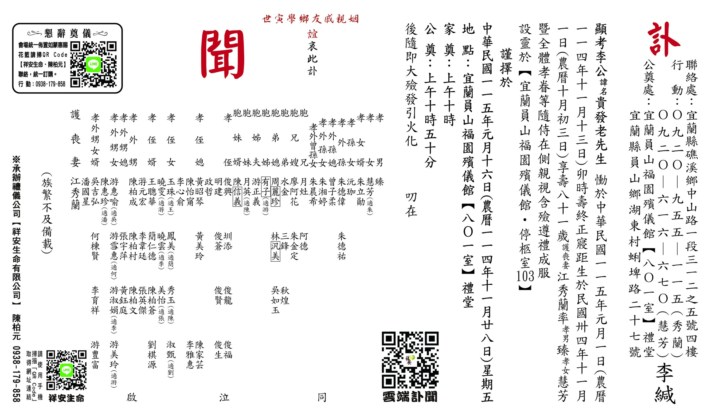
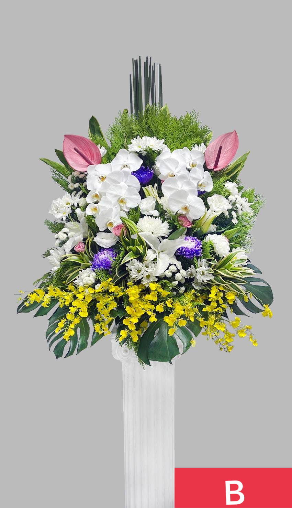

複製資訊
複製資訊
 分享親友
分享親友
德範長存，永誌一心
我們最敬愛的 李貴發 先生
於 115 年 01 月 01 日 (卯時)，
在家人們的陪伴與思念中，
圓滿塵世旅程，安詳化作星辰。
留下的溫暖與教誨，將永遠照亮我們。
謹擇於
115 年 01 月 16 日 (星期五)，
於宜蘭員山福園 ［ 801 ］禮廳
舉辦追思告別奠禮
敬邀您
一同參與先生的畢業典禮
115.01.16
西元 2026 年 ‧ 國曆一月十六日
( 農曆 乙巳年 十一月廿八日 ) 星期五
安靈地點 (停柩室)
宜蘭員山福園 停柩室 [ 103 ]
( 奠禮前弔唁請至此處 )
追思奠禮會場
宜蘭員山福園 禮廳 [ 801 ]
( 參加奠禮請至此處 )
家奠禮
10:00
公奠禮
10:50
請著整齊、樸素以表尊敬與追思之意。
奠禮會場儀式期間，請將手機調至靜音或關機。
園區內請以「平安」代替「再見」。
若因宗教信仰不持香，請與工作人員示意即可。

( 點擊圖片放大全文 )

花籃樣式+
CATALOG +
LINE 訂購
SERVICE
 花籃 A 款$2,500 / 對
花籃 A 款$2,500 / 對
花籃 B 款$3,000 / 對 花籃 C 款$3,500 / 對
花籃 C 款$3,500 / 對致 每一位溫暖的您
謝謝這段日子的關懷與陪伴
每一句問候 每一份情誼
就像是穿透雲層的微光
溫柔地照亮了這份思念
這份真誠厚情 永誌於心
家屬 全體家眷 叩謝